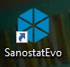
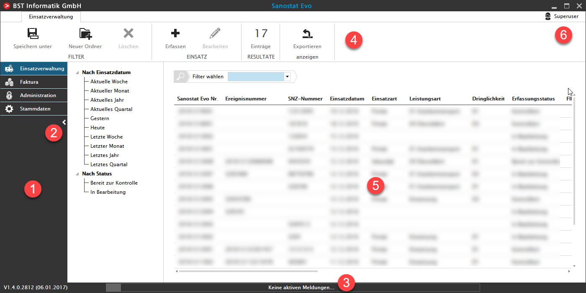
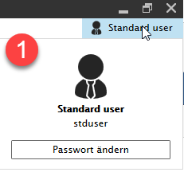

Erste Schritte
Sanostat Evo starten
In der Regel starten Sie Sanostat Evo bequem mit einem Doppelklick vom Desktop Ihres Computers:

Anmeldung
Nach kurzer Ladezeit wird Ihnen die Login-Maske angezeigt, wo Sie sich mit Benutzername und Passwort einloggen.
Als Benutzername kann entweder Ihre E-Mail-Adresse oder Ihr Kürzel der Organisation verwendet werden.
Sollten Sie bei der Anmeldung Probleme haben, wenden Sie sich an Ihren Applikationsverantwortlichen in Ihrem Unternehmen.
Bereiche der Benutzeroberfläche

Navigationsbereich (1)
In diesem Bereich wird durch die einzelnen Module von Sanostat Evo navigiert.
Die Anzeige der Module ist abhängig von Benutzerrechten und Lizenzen.
In dieser Ansicht ist die Navigationsleiste aufgeklappt und die Bezeichnungen der Module sind sichtbar.
Pfeil (2)
Mithilfe des Pfeils (<) unten rechts, kann die Navigationsleiste zugeklappt werden.
Statusleiste (3)
Fehler- und Warnmeldungen der Applikation werden in der Statusleiste angezeigt.
Stehen keine Informationen für den Benutzer an, wird dies mit dem Text 'Keine aktiven Meldungen...' signalisiert.
Der Verlauf der Meldungen kann durch einen Klick auf 'Keine aktiven Meldungen...' eingesehen werden. Die jeweilige Programmversion, unten links, ist für Support-Arbeiten relevant.
Aktionsbereich (4)
Die Multifunktionsleiste oder 'Ribbon-Bar' ist von Microsoft Office Produkten (Word, Excel etc.) bekannt. Dort finden Sie sämtliche Aktionen, die Sie beim aktuellen Bildschirm ausführen können.
Inhalt (5)
In diesem Bereich wird der Hauptinhalt wie z.B. die Einsatzverwaltung oder die Einsatzerfassung der Applikation angezeigt.
Profil (6)
Oben rechts wird angezeigt, mit welchem Benutzernamen Sie aktuell eingeloggt sind.
An dieser Stelle können Sie in drei Schritten Ihr Passwort ändern.


Um sich auszuloggen, klicken Sie das  oben rechts am Bildschirm an. Sollten Sie nicht gespeicherte Daten haben, werden Sie mit einer Meldung zum Speichern aufgefordert.
oben rechts am Bildschirm an. Sollten Sie nicht gespeicherte Daten haben, werden Sie mit einer Meldung zum Speichern aufgefordert.